Просмотр карточки учета ОБ
При входе в реестр ОБ есть возможность просмотра карточки объекта, для этого необходимо нажать на Портальный идентификатор ОБ. После чего произойдет переход.
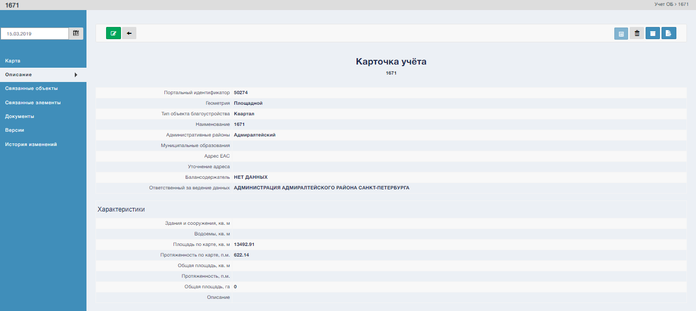
Функционал Карточки учета:
1. кнопка “Редактировать” (смотри “Редактирование карточки учета ОБ”)
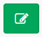
2. кнопка “Назад”, переход в реестр ОБ
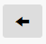
3. кнопка “Деактивировать”
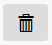
4. кнопка “Архивировать”
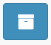
5. кнопка “Экспорт карточки учета”
Меню карточки учета содержит следующие элементы:
Карта По функционалу аналогично разделу “Карта”
Описание, содержит описание объекта. 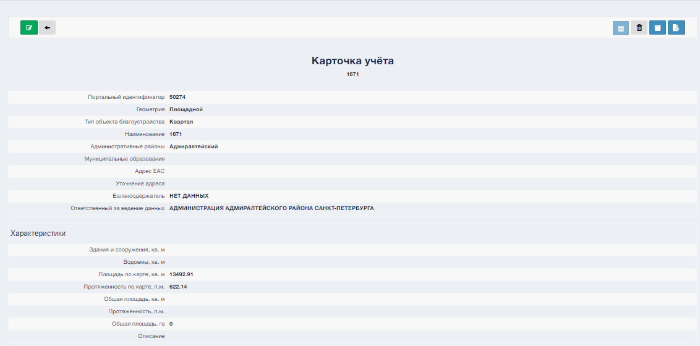
Связанные объекты, содержащие связанные объекты с данным.
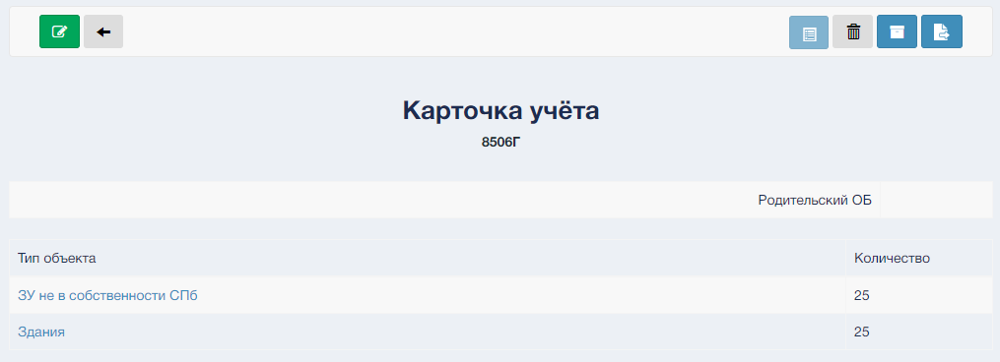Связанные элементы, содержащие связанные элементы с данным. Связанные элементы (ПРОБЛЕМА с созданием элементов)
Документы, загруженные в карточку учета.
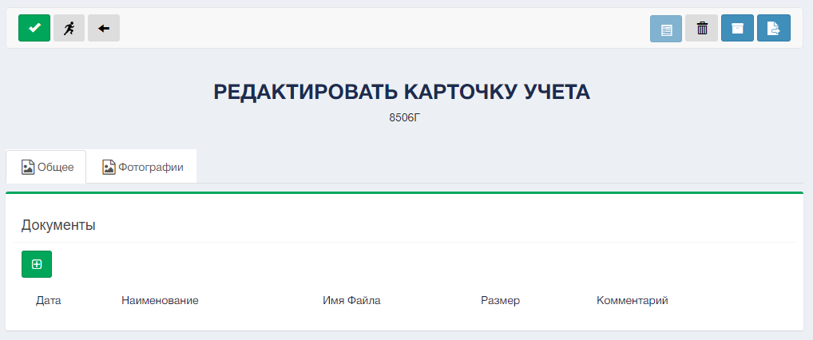 Для добавления документ нажмите кнопку “Добавить документ” 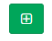, затем выберите необходимый файл 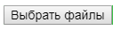 и нажмите кнопку “Загрузить” 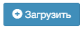История изменений, содержит хронологию редактирования данной карточки.
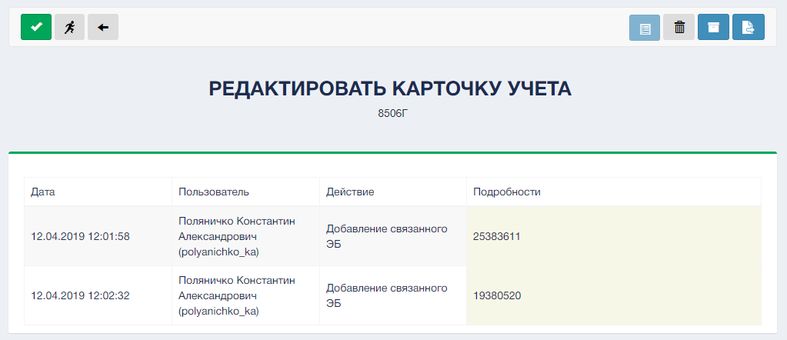